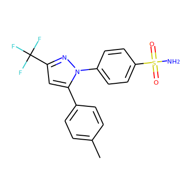

We start by creating a machine learning model that is trained on millions of structures designed by expert chemists.
This model generates all types of structures.
In order to find molecules with specific properties, we use reinforcement learning.
This is the same technique that was used in AlphaGo to beat the best human GO players.
The idea is simple: the model gets rewarded when it does something good (generates an interesting molecule!).
Over time it learns how to maximize the reward.
Lets see how it works through an example!
Our objective is to generate analogues to the drug Celecoxib.
We achieve this by using Tanimoto similarity of molecular fingerprints as our objective.
and this is the result…